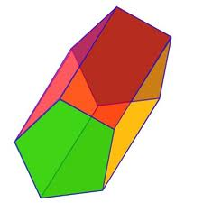
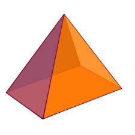
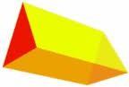
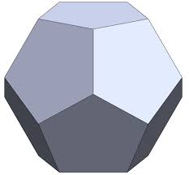

Cuerpos geométricos
poliedros
Los poliedros son cuerpos tridimensionales limitados por figuras planas, llamadas caras, que son polígonos. Prismas y pirámides son ejemplos de poliedros.
 
Obra publicada con Licencia Creative Commons Reconocimiento No comercial Compartir igual 4.0